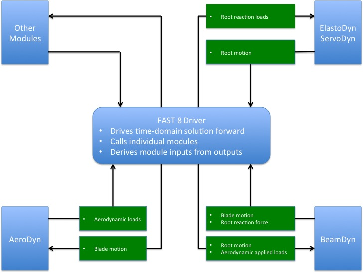

4.7.1. 소개
BeamDyn은 미국 에너지부 풍력 및 수력 프로그램과 NLR 연구소의 LDRD(Directed Research and Development) 프로그램 지원을 통해 로키산맥 국립연구소(NLR)에서 "풍력터빈 구조 역학의 고충실도 전산 모델링" 지원을 통해 생성한 날씬한 구조를 위한 시간 영역 구조 역학 모듈입니다. 참고 자료 참조 [WJSJ15, WS13, WSJJ14, WYS13]. 이 모듈은 블레이드 구조 역학을 모델링하는 데 사용되는 FAST 에어로-하이드로-서보-탄성 풍력터빈 다중 물리 엔지니어링 도구에 결합되었습니다. BeamDyn 모듈은 FAST 모듈화 프레임워크의 요구 사항을 따릅니다. 참고 자료를 참조하세요. [존13]; [GSJ13, JJ13, SJJ14]는 FAST 버전 8과 결합되어 대규모 변형을 겪는 초기 곡선 및 비틀림 복합 풍력터빈 블레이드를 모델링하는 새로운 기능을 제공합니다. BeamDyn은 또한 FAST에서 분리된 규정된 경계 및 적용된 하중 조건 하에서 가는 구조(블레이드 또는 기타)의 정적 및 동적 응답을 계산하기 위해 독립 실행형 코드로 구동될 수도 있습니다.
BeamDyn의 기본 모델은 GEBT(기하학적으로 정확한 빔 이론)입니다. [Hod06]. GEBT는 굽힘, 비틀림, 전단 및 확장 자유도(DOF)를 포함하여 완전한 기하학적 비선형성 및 큰 편향을 지원합니다. 이방성 복합 재료 커플 링 (전체 사용 굽힘-트위스트 커플링을 포함한 \(6 \times 6\) 질량 및 강성 매트릭스); 직선이 아닌 블레이드를 허용하는 기준 축(내장 곡선, 스윕 및 단면 오프셋 지원)이 있습니다. GEBT 빔 방정식은 르장드르 스펙트럼 유한 요소(LSFE)를 사용하여 공간에서 이산화됩니다. LFSE는 p유형 요소 h유형 유한 요소(FE) [Pat84]. 원활한 솔루션을 위해 LSFE는 대수적 수렴을 갖는 저차 요소에 비해 지수 수렴 속도를 갖습니다. [SG03, WS13] . 유한 요소 내적에 대해 두 가지 공간 수치 통합 방식, 즉 감소된 가우스 구적법과 사다리꼴 법칙 통합이 구현됩니다. 예를 들어 길이에 따라 재료 특성이 급격하게 변하는 긴 풍력터빈 블레이드와 같이 빔 축을 따라 다수의 단면 특성이 지정되는 경우 사다리꼴 규칙 통합이 적합합니다. BeamDyn 운동 방정식의 시간 통합은 암시적 일반화를 통해 달성됩니다. 사용자 지정 수치 감쇠 기능을 갖춘 \(\alpha\) 솔버. GEBT-LSFE 결합 접근 방식을 사용하면 사용자는 단일 상위 요소를 사용하여 길고 유연한 복합 풍력터빈 블레이드를 모델링할 수 있습니다. 위에 소개된 이론적 기초와 강력한 수치 도구를 바탕으로 BeamDyn은 복잡한 비선형 합성 빔 문제를 효율적인 방식으로 해결할 수 있습니다. 예를 들어, 최근에는 50m 길이의 복합 풍력터빈 블레이드와 수십 개의 단면 스테이션을 갖춘 그리드 독립적인 동적 솔루션이 단일 장치로 달성될 수 있다는 것이 밝혀졌습니다. \(7^{th}\)-LSFE 주문 [WSJJ16].
FAST와 결합하면 FAST 드라이버 프로그램(글루 코드)을 통해 BeamDyn, ElastoDyn, ServoDyn 및 AeroDyn 간에 하중과 응답이 전송되어 각 결합 시간 단계에서 Aero-Elasto-Servo 상호 작용이 가능해집니다. 각 블레이드마다 별도의 BeamDyn 인스턴스가 있습니다. 루트 노드에서 BeamDyn에 대한 입력은 6개의 변위(3개의 변환 및 3개의 회전), 6개의 속도 및 6개의 가속도입니다. BeamDyn의 루트 노드 출력은 6개의 반력 하중(3개의 병진력과 3개의 모멘트)입니다. BeamDyn은 또한 BeamDyn의 입력으로 사용되는 로컬 공기역학적 하중(길이를 따라 분산됨)을 계산하기 위해 AeroDyn에서 사용되는 빔 길이에 따른 블레이드 변위, 속도 및 가속도를 출력합니다. 또한 BeamDyn은 사용자의 요청에 따라 부재 내부 반력 하중을 계산할 수 있습니다. BeamDyn과 FAST의 다른 모듈 간의 결합된 상호 작용은 그림 [그림:FlowChart]를 참조하십시오. FAST와 결합하면 BeamDyn은 여전히 옵션으로 제공되지만 굽힘이 지배적인 직선형 등방성 블레이드에만 적용할 수 있는 보다 단순화된 ElastoDyn의 블레이드 구조 모델을 대체합니다. FAST에서 분리되면 루트 모션(경계 조건)과 적용된 하중이 독립형 BeamDyn 드라이버 코드를 통해 지정됩니다.


그림 4.28 BeamDyn과 FAST 간의 결합된 상호 작용
BeamDyn 입력 파일은 블레이드 형상을 정의합니다. 단면 재료 질량, 강성 및 감쇠 특성; FE 해상도; 및 기타 시뮬레이션 및 출력 제어 매개변수. 블레이드 형상은 3차원(3D) 공간의 일련의 주요 지점과 해당 지점의 초기 비틀림 각도에 의해 곡선형 블레이드 참조 축을 통해 정의됩니다. 각각 회원 에는 BeamDyn에 구현된 3차 스플라인 맞춤에 대한 최소 3개의 핵심 포인트가 포함되어 있습니다. 각 멤버는 요소의 순서를 정의하는 매개변수가 있는 단일 LSFE로 구분됩니다. 멤버와 순서를 정의하는 핵심 포인트의 수( LSFE의\(N\))는 독립적입니다. LSFE 노드는 다음 위치에 있습니다. \(N+1\) Gauss-Legendre-Lobatto 점은 요소를 따라 균일한 간격으로 배치되지 않습니다. 노드 위치는 메쉬 정보를 기반으로 모듈에 의해 생성됩니다. 블레이드 속성은 블레이드 참조 축을 따라 0.0에서 1.0 사이의 무차원 좌표로 지정되며 필요한 경우 공간 통합 방법에 의해 두 스테이션 사이에 선형으로 보간됩니다. BeamDyn 적용 하중은 직교 지점에 지정된 분산 하중, FE 노드에 지정된 집중 하중 또는 이 둘의 조합일 수 있습니다. BeamDyn이 FAST에 결합되면 블레이드 분석 노드 이산화는 BeamDyn과 AeroDyn 간에 독립적일 수 있습니다.
이 문서는 다음과 같이 구성되어 있습니다. 섹션 러닝 BeamDyn 에서는 BeamDyn 및 FAST 소프트웨어 아카이브를 구하고 BeamDyn의 독립 실행형 버전 또는 FAST와 결합된 BeamDyn을 실행하는 방법을 자세히 설명합니다. 섹션 입력 파일 는 BeamDyn 입력 파일을 설명합니다. 섹션 출력 파일 는 BeamDyn에서 생성된 출력 파일에 대해 설명합니다. 섹션 BeamDyn 이론 는 BeamDyn 이론을 요약합니다. 섹션 향후 개발 계획 는 잠재적인 향후 작업을 간략하게 설명합니다. 예제 입력 파일은 부록에 나와 있습니다. 섹션 4.7.8.1. 사용 가능한 출력 채널 요약은 부록에 나와 있습니다. BeamDyn 출력 채널 목록.